Mac笔记本（可联网）https://item.jd.com/4331153.html
机械键盘 https://item.jd.com/3753188.html
推荐茶轴、青轴。声音的问题一般不用太在意，因为正常情况下，工作时间，周围人讲话的声音绝对打过打字的声音。
款式因人而异，个人推荐带方向键不带数字区的键盘，大小合适。
秒控鼠标 https://item.jd.com/2187061.html
减少鼠标移动，缓解手腕压力，使用体验总结起来就是两个字——优雅
显示器 未买，无推荐
打开系统偏好设置，选择用户与群组，选择访客，点击关闭访客。
如此设置，可以避免电脑在启动时有用户选择的过程。
同时关闭Guest账户可以提高系统安全性。
打开系统偏好设置，选择键盘，点修饰键
选择键盘中外置键盘，交换Option键和Command键位置：
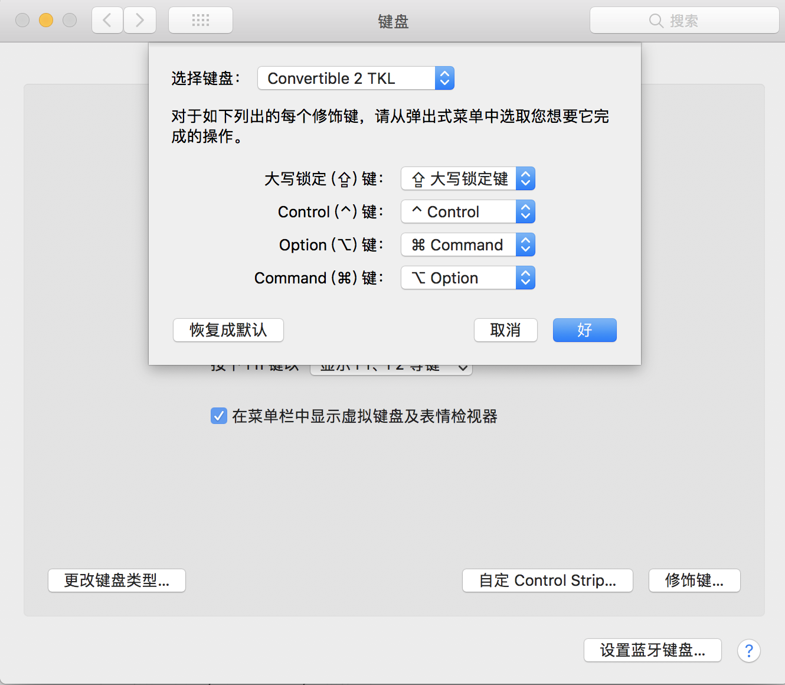
因为windows键盘和mac键盘布局有差异，如此可以减少切换键盘时的小麻烦。使用机械键盘的话，还可以把键帽拔下来交换位置，更顺眼。
如果外置键盘本来就可以与笔记本内置键盘保持一致，则可忽略此步骤。
如果发现鼠标右键不起作用，可以尝试在系统偏好设置中，点击鼠标，勾选“辅助点按”：
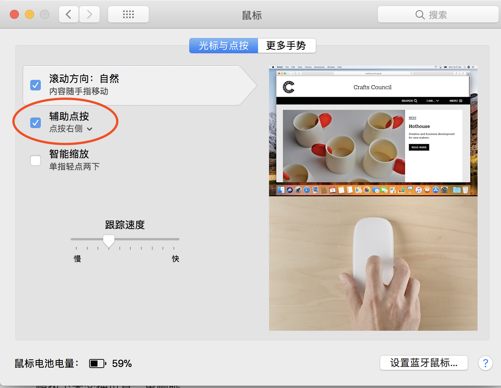
安装了输入法之后，可以再键盘设置中的输入法标签页里，删除系统带的中文输入法，保证ctrl+space能够在中英之间切换，否则可能出现搜狗中文切换到mac中文输入法的情况。
点击下图标记的按钮
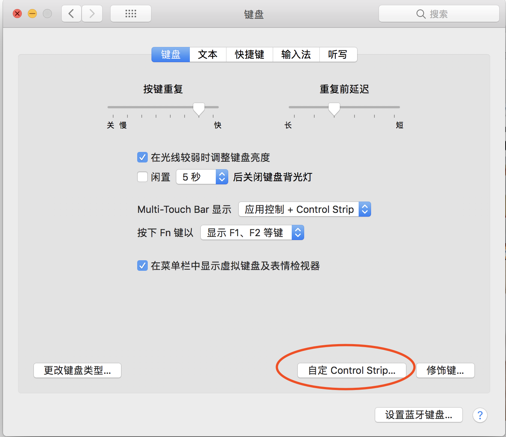
可以看到touchbar上的按钮的自定义界面，鼠标拖动按钮往下即可拖放。
本人一般将锁屏、音量调节、亮度调节放到上面，比较常用。
mac软件比较贵，有一些破解网站可提供下载，目前有两个选项：
免费版的出现过链接失效的情况，收费版一般都没问题。需要连接网盘，公司内网无法下载。
Office系列，如Outlook、PowerPoint、Word、Excel，公司电脑一般预装。
QQ、微信、咚咚等
最新版的host配置已经不是lanyus网站上所说的两个host，而是配置0.0.0.0 https://account.jetbrains.com:443
能支持正版当然是最好的
配置终端：默认是bash，可以改为zsh：
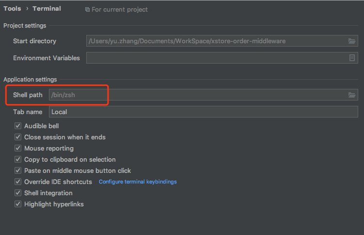
推荐辅助插件：
推荐快捷键设置
command+\ 将当前窗口纵向一分为二shit+command+\ 将当前窗口在另一侧打开（分屏情况下）command+shift+R 快速打开最近打开过的项目contrl+command+; 如果装有vim插件，可以切换vim模式shift+command+C 拷贝引用，拷贝一个类名时，会连带包名一起复制contrl+command+, 调试时动态计算表达式编辑器神器，之前一直用的sublime，但是sublime在linux下无法切换中文输入法，后转用VSCode，该有的功能都有。
VSCodium时VSCode的社区版，二者在功能上没有太大的区别。详见官网：http://vscodium.github.io
特色插件（忽略语言支持插件）:
常用快捷键：
cmd+k+m：语法选择
cmd+shift+p：调出控制台
反编译工具
http://java-decompiler.github.io/
jdk最高为8，9以上打不开。
目前大部分软件对于8的支持还是没问题的，8以上可能有各种问题，包括groovy、maven、jdgui，所以还是推荐安装jdk8而非最新版。
https://www.oracle.com/technetwork/java/javase/downloads/jdk8-downloads-2133151.html
历史版本jdk下载需要登录Oracle账号
内网鲸盘下载：https://3.cn/pTfLLPE
推荐插件：
实时Markdown编辑工具，本文就是用Typora写的
按照markdown语法编写文档时能够实时看到效果，界面简洁，功能强大
终端工具，这里不针对该工具有何配置，主要是命令行环境：
安装brew包管理工具: https://brew.sh/
安装oh-my-zsh: https://ohmyz.sh/
zsh中包含了许多插件的配置，插件本身需要自行安装，推荐插件：
git 包含git命令的别名，如git pull = gl, git checkout = gco 等
autojump 通过brew命令即可https://github.com/wting/autojump，命令行环境下目录快速切换
autosuggestion https://github.com/zsh-users/zsh-autosuggestions/blob/master/INSTALL.md 命令记忆和补全
配置常用软件的指令：
主题推荐：https://blog.biezhi.me/2018/11/build-a-beautiful-mac-terminal-environment.html
vim配置高亮：
打开terminal复制/usr/share/vim/vimrc到家目录下并重命名为".vimrc",然后编辑该文件，增加以下几行
syntax onset nu!set autoindent
效率神器，要安装高级版的，插件更全一些，最重要的两个插件是Clipboard和Snippets
Clipboard可以记忆复制的文本，而Snippets可以设置一些常用文本的快捷输入
alfred我设置的快捷键是command+space，取代spotlight，需要在系统偏好设置中取消spotlight快捷键
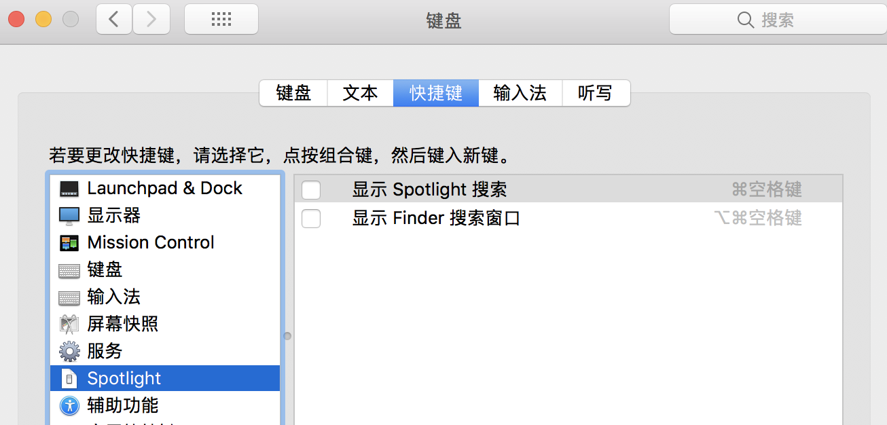
clipboard可以设置快捷键shift+command+V
snippets设置快捷键contral+p
快捷键设置依据个人喜好而定。
可以自定义workflow插件，如本人自己写了一个xml browser的插件：
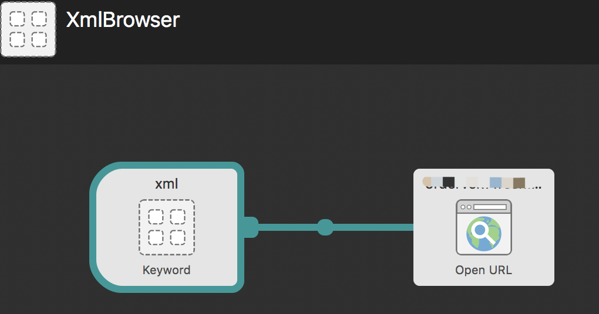
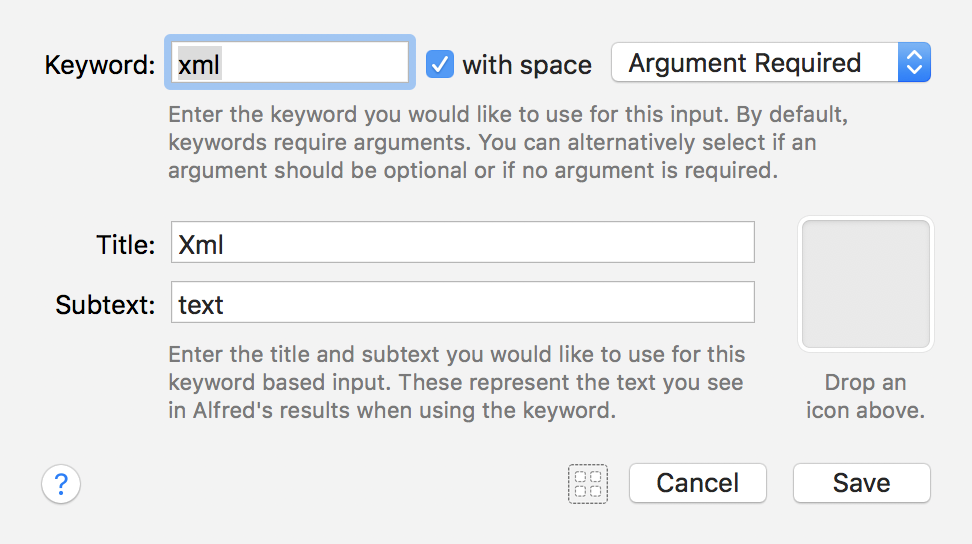
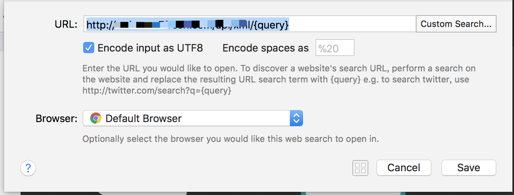
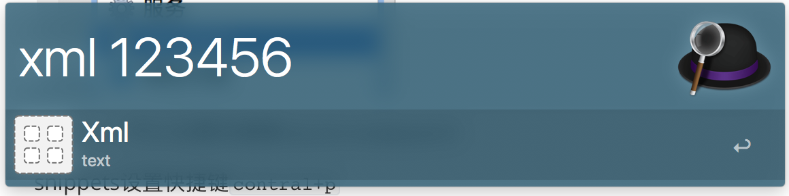
可以在alfred中输入上面的指令，然后将快速打开指定的页面，传递的参数为123456
alfred可以搜索收藏夹，也很实用：
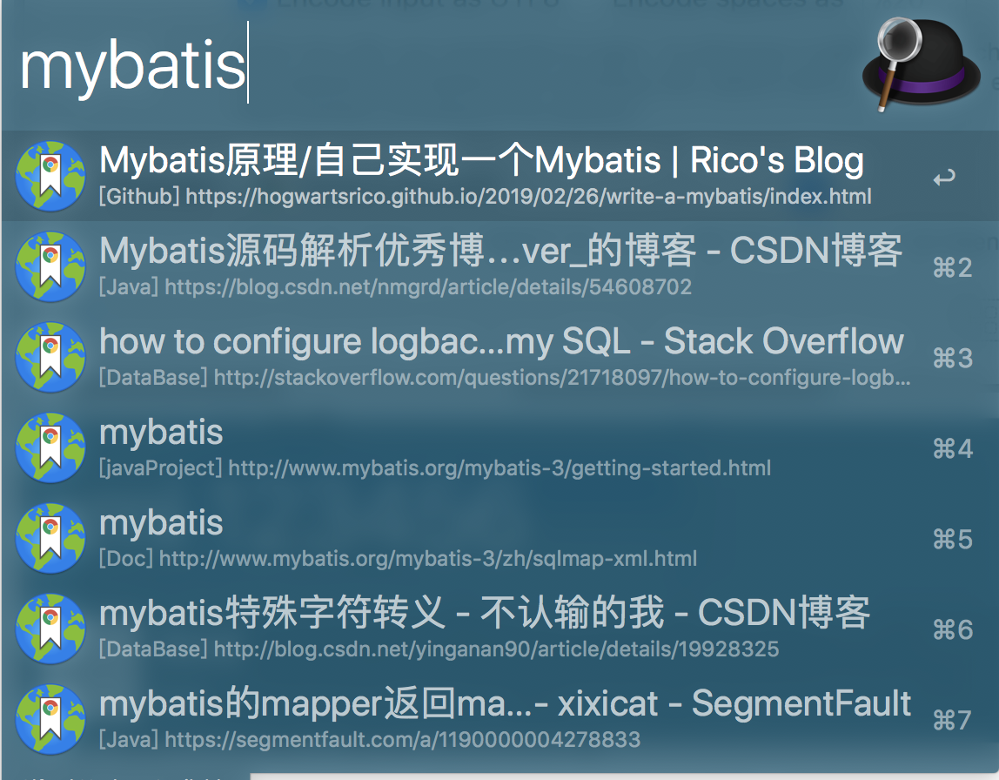
快速切换hosts配置 https://github.com/oldj/SwitchHosts
密码填充工具，1Password更好用些，但是新版本的使用起来比较费劲，可以用LastPass代替，也能完成密码的填充。Chrome本身也可以。1Password的好处在于可以全面管理你的密码，提供多端支持，通过icloud同步。
窗口管理软件，通过拖动来布局：
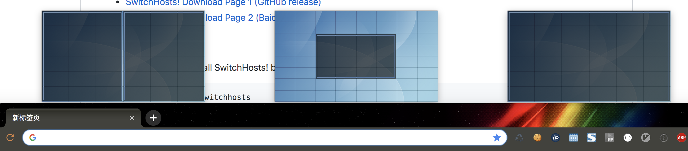
将窗口拖动到预定义的这几个布局区域中，窗口就会按照设置来改变布局
同样是窗口布局软件，不如上面的直观，但是有快捷键，能够迅速将窗口全屏或者从一个屏幕移动到另一个屏幕。
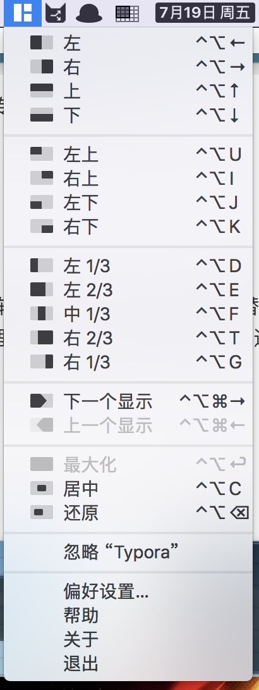
系统清理软件，清理垃圾用
https://www.mowglii.com/itsycal/
日期时间工具，比原生的好一些，能够看日历：
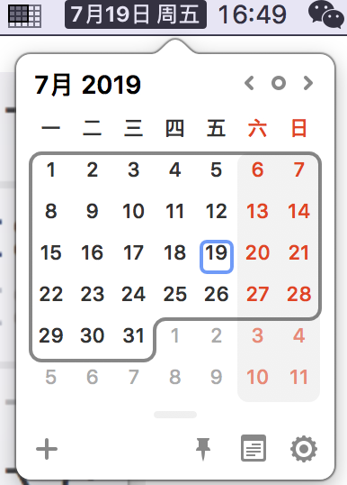
比Docker展示的更清晰的侧边栏：
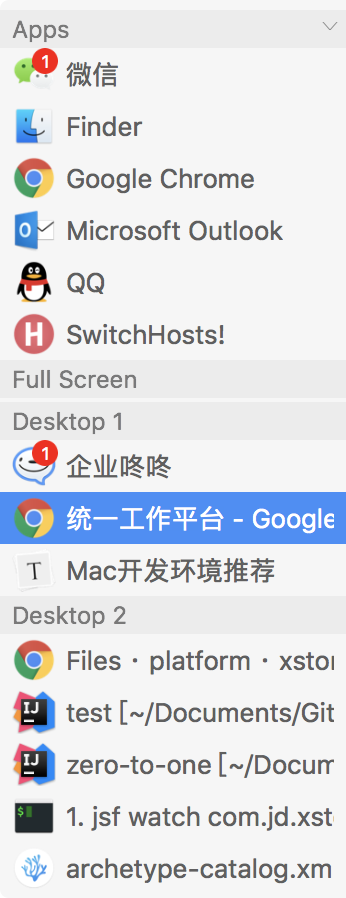
其增强了系统原有的command+Tab的切换界面。系统自带的话只有大图标，当同一个应用开了多个窗口时不能很好的切换。
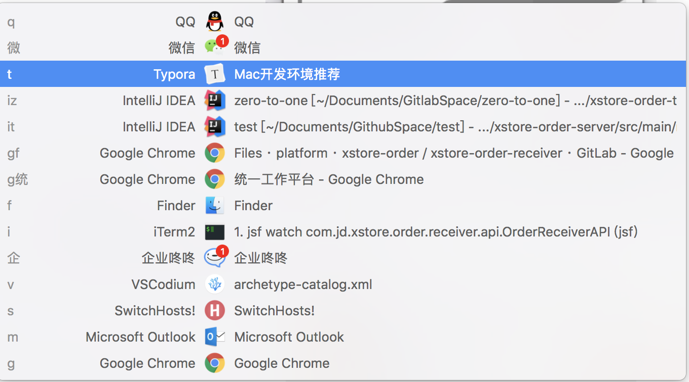
应用内窗口切换command+1左边的键：
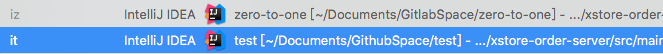
touchBar显示Dock
确实能显示，但是点击图标没有切换出应用，看未来版本是否能改进
最新消息，触控板已经可以切出应用，可以很好用了
使用时建议在首选项中，去掉如下设置：
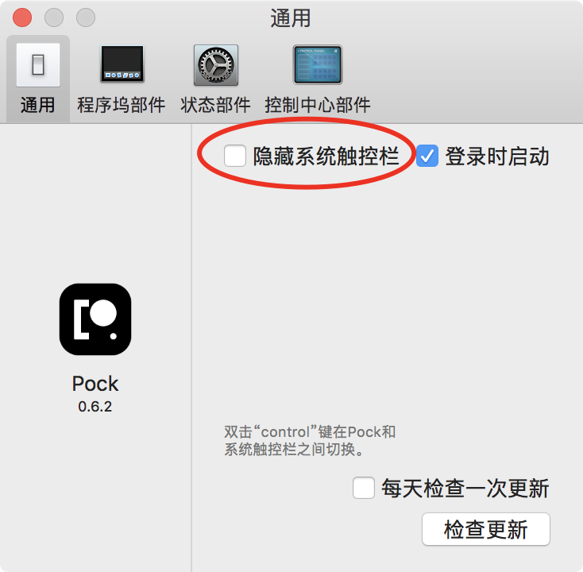
同时，通过自定义触控栏，将pock自带的esc键移除
不怎么用，略
工具、软件的安装配置，统一使用默认配置，如maven的settings.xml，放到/Users/username/.m2/下面，repository同理
专业相关目录，按照来源和用途分类为：
GithubSpace：存放所有从github克隆的代码，Gitlab、Gitee等以此类推
ToolSpace：存放所有中间件、工具项目，如maven、jd-gui、spring-shell
WorkSpace：存放工作代码